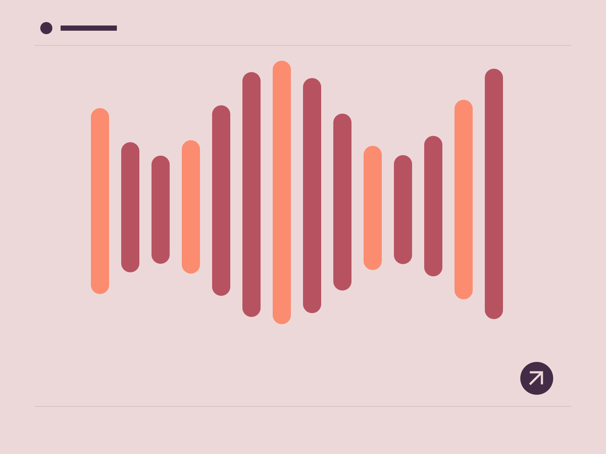

프로젝트 노트
가상 행사
작은 공연의 소리와 움직임을 도형으로 표현한 행사 아이덴티티 콘셉트입니다.
처음의 질문
소리를 재생하지 않고도 리듬의 차이를 느끼게 하는 시각적 방식이 필요했습니다.
우리가 찾은 방식
반복되는 선의 길이, 간격, 색의 면적을 바꿔 시각적 박자를 구성했습니다.
남긴 생각
정지된 포스터와 움직이는 화면이 같은 언어를 갖는 실험입니다. 실제 행사나 판매 티켓은 없습니다.

프로젝트 노트
작은 공연의 소리와 움직임을 도형으로 표현한 행사 아이덴티티 콘셉트입니다.
소리를 재생하지 않고도 리듬의 차이를 느끼게 하는 시각적 방식이 필요했습니다.
반복되는 선의 길이, 간격, 색의 면적을 바꿔 시각적 박자를 구성했습니다.
정지된 포스터와 움직이는 화면이 같은 언어를 갖는 실험입니다. 실제 행사나 판매 티켓은 없습니다.
다음 장면을 함께